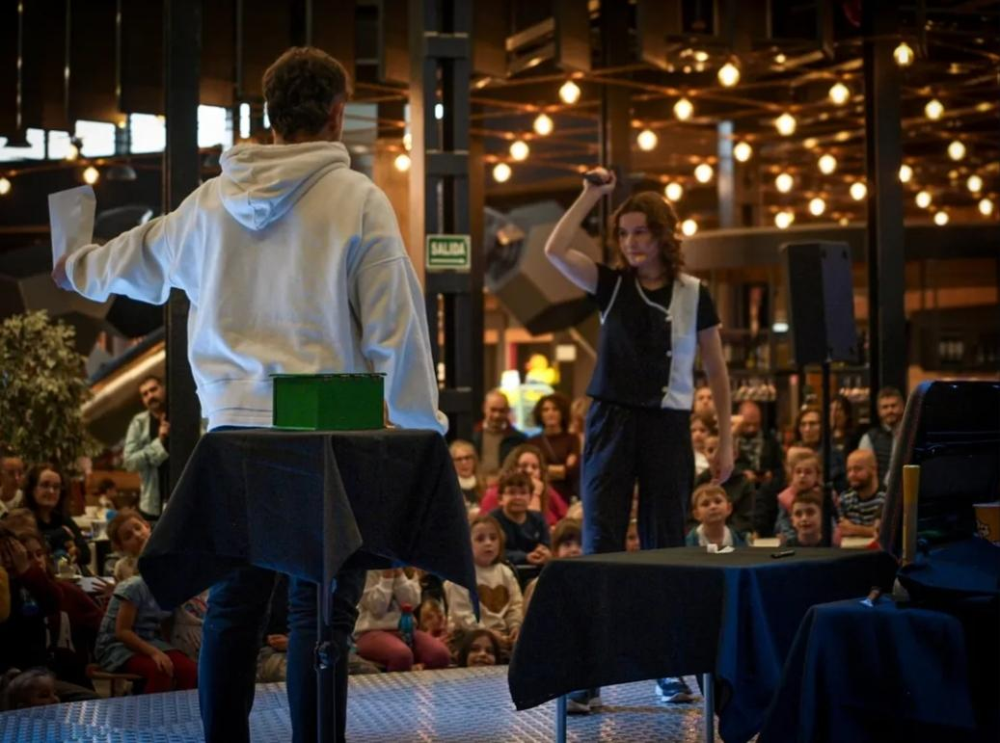
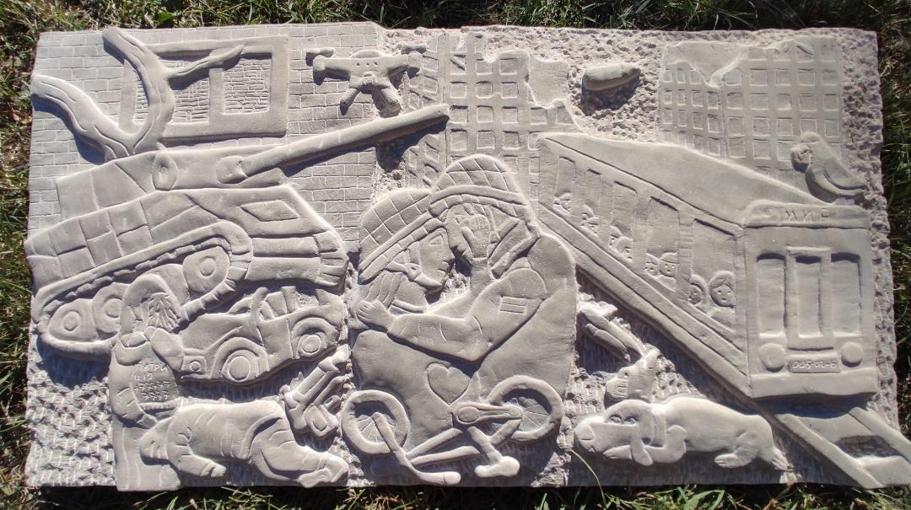
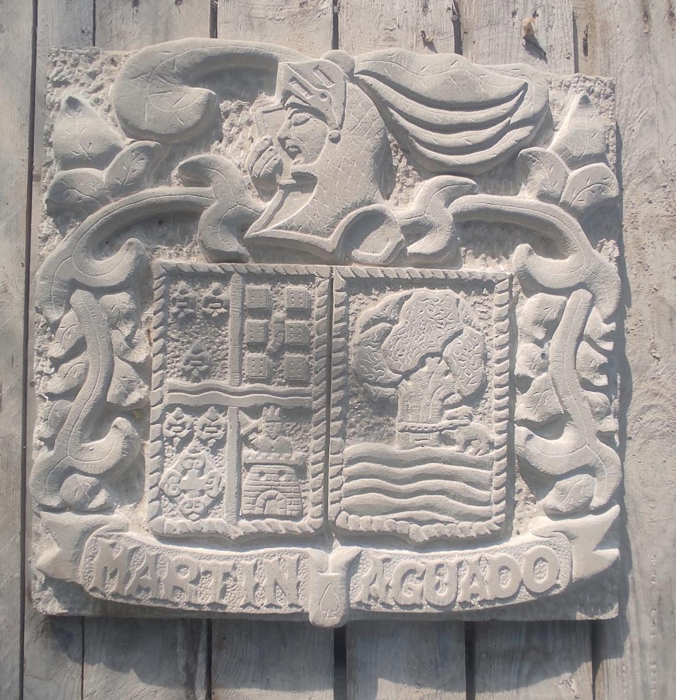
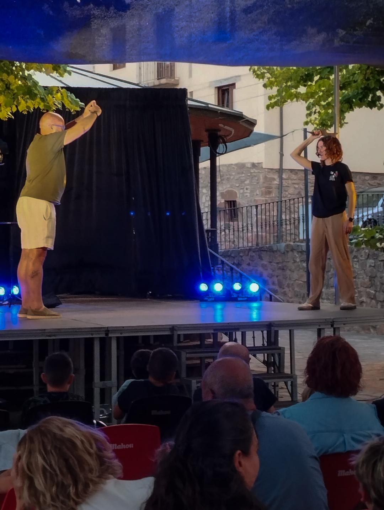
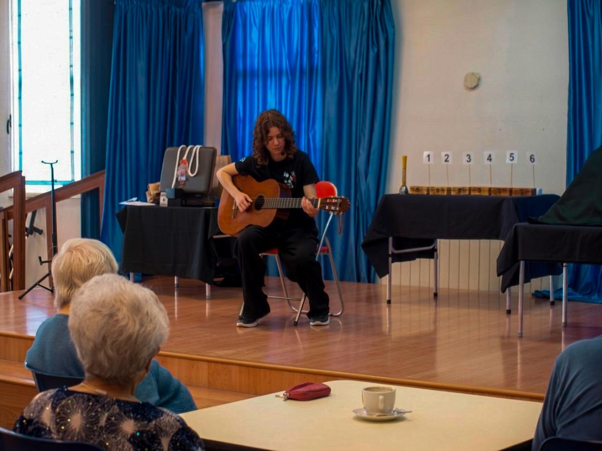

Modelado 3D
Productos y entornos con topología optimizada.
PORTFOLIO PROFESIONAL
Artista 3D · Animación · Modelado · Arte
EL OTRO LADO DEL TELÓN
Magia · Ilusionismo · Espectáculo
3D & 2D ARTIST
Artista 3D especializada en modelado, texturizado, iluminación y animación.
Soy Patricia Martín, artista 3D con formación superior en Animación 3D y experiencia en modelado de productos, entornos y props.
Productos y entornos con topología optimizada.
Texturizado PBR y renderizado fotorrealista.
Piezas audiovisuales y presentación.
Prácticas en Render Estudio 3D, RiojaSkills (1er Premio) y participación en SpainSkills.
Email: patriciaanimacion3d@gmail.com
Teléfono: 628 243 657

Mi identidad artística nace como un homenaje al legado de mi abuelo, quien esculpía la piedra y era conocido como "El Pica". De su oficio heredo la premisa que guía mi trabajo sobre el escenario: esculpir la ilusión con paciencia, técnica y precisión hasta transformar la materia cotidiana en una experiencia extraordinaria.
Mi repertorio abarca desde espectáculos de escenario y galas teatrales hasta formatos de magia de cerca (Close-up) para eventos corporativos y culturales.
Mi objetivo se centra en dignificar el arte de la magia como una disciplina escénica contemporánea, capaz de sorprender a públicos exigentes y generar momentos memorables.
Abierta a programación en teatros, festivales, eventos corporativos y proyectos de creación cultural.

Con 15 años y viendo las esculturas de mi abuelo, cogí una de sus mazas y uno de sus cinceles y empecé a esculpir. Sentía como si las manos de mi abuelo guiasen las mías. Mágicamente donde había una piedra sin forma, aparecía una figura.
Esculpir la piedra y hacer magia son, en esencia, dos formas distintas de realizar el mismo acto: revelar lo invisible y transformar la materia.
El escultor no "crea" la forma desde la nada; la libera. Sabe que la figura ya habita dentro del bloque de piedra y que su trabajo consiste en retirar lo sobrante para sacarla a la luz.



La fotografía y la magia comparten un mismo centro de gravedad: la manipulación de la luz, el tiempo y la atención para transformar la realidad.
La fotografía no es solo un lenguaje paralelo, sino una herramienta que nutre directamente su dimensión artística sobre el escenario. Su sensibilidad para la composición visual, la perspectiva y el contraste influye en la geometría de sus efectos y en la estética de sus montajes.


Espectáculo de magia y narrativa escénica


La hermana del medio es una propuesta de ilusionismo contemporáneo que explora el lugar que ocupamos en la familia, las memorias compartidas y las dinámicas invisibles que definen quiénes somos.
Magia, memoria y el arte de esculpir la ilusión


PICA es el espectáculo más personal de Patricia Martín, un viaje escénico donde la magia se entrelaza con el homenaje familiar, la memoria y la artesanía.
Para contrataciones, programación de espectáculos o información: